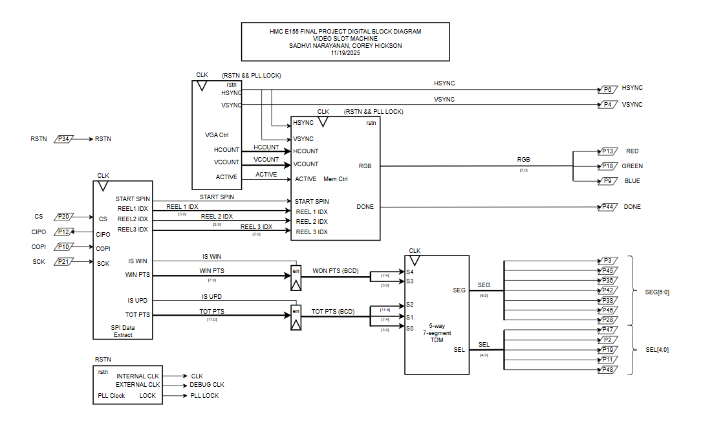

FPGA Design
FPGA Design
The FPGA handles all visual output and timing-critical operations for the slot machine. A VGA controller generates sync signals and drives RGB output at 25.5 MHz using the PLL, and a memory controller fetches sprite data from EBR blocks based on the current reel positions and VGA coordinates. The system receives commands from the MCU over SPI—including where each reel should stop and how many credits were won along with the player’s total credit count, in order to create a realistic slot machine animation. We have a couple modules for the seven-segment displays which drive the credit and winnings displays based on values sent from the MCU.
VGA Timing Protocol
The VGA controller operates at 640×480 resolution, coordinating pixel output through horizontal and vertical timing sequences.
Horizontal Timing (per scan line)
Each line spans 800 clock cycles total, broken down as:
- 640 cycles of active pixel data
- 16-cycle front porch
- 96-cycle sync pulse
- 48-cycle back porch
Vertical Timing (per frame)
Each frame contains 525 lines total:
- 480 visible lines displaying image content
- 10-line front porch
- 2-line sync pulse
- 33-line back porch
The controller uses counters to track position within these windows. During the 640×480 visible region, it outputs RGB pixel data fetched from memory. Outside this window, RGB outputs go to zero while sync signals coordinate the monitor’s beam positioning for the next frame.
Core FPGA Modules
- VGA Controller
- Generates horizontal and vertical sync signals (
hsync,vsync) which are active-low - Maintains
hcount(0-799) andvcount(0-524) counters that track the current pixel position - When
hcountreaches 799, it resets to 0 and incrementsvcount; when both reach their max, the frame completes and both counters reset - Asserts
active_videosignal only during the visible 640×480 display region to gate RGB output - Sync pulses are generated when counters fall within their respective sync timing windows (first 96 horizontal cycles, first 2 vertical lines)
- Generates horizontal and vertical sync signals (
- Memory Controller
- Stores a mapping of unique sprite sequences per reel in lookup tables initialized at synthesis:
- Reel 1: Sequential (0,1,2,3,4,5,6)
- Reel 2: Shuffled (3,0,6,2,4,1,5) to prevent consecutive-value adjacency
- Reel 3: Shuffled (2,5,0,3,6,1,4) to prevent consecutive-value adjacency
- Receives reel ending symbol indices from SPI module (interfacing with MCU)
- Computes each reel’s pixel offset on frame completion based on the unique sprite pattern for that reel
- Takes in
(hcount, vcount)coordinates from VGA controller to:- Determine which reel the current pixel belongs to (based on horizontal boundaries)
- Calculate vertical position within that reel using
(vcount - REEL_START + reel_offset) % TOTAL_HEIGHT - Derive sprite index by dividing vertical position by scaled sprite height (128 pixels)
- Map sprite index through the reel’s sequence table to get actual sprite number
- Calculate x and y coordinates within the 64×64 sprite, accounting for 2× scaling
- Implements a 3-stage pipeline to match ROM latency:
- Stage 0: Combinational address calculation
- Stage 1-2: ROM access with registered control signals
- Stage 3: Data alignment and pixel extraction
- Sequentially stops reels in timed order with realistic deceleration:
- During
START_SPINNING: All reels advance 24 pixels/frame at full speed - Each reel tracks a spin counter (reel 1 → 3 spins, reel 2 → 2 spins, reel 3 → 2 spins)
- When a reel’s counter hits 0, it transitions to its STOP state and slows to 12 pixels/frame
- Calculates target ending offset:
(target_sprite_pos × 128 + TOTAL_HEIGHT - centering_offset) % TOTAL_HEIGHT - Snap-back logic prevents overshooting: if next offset would exceed target, clamp it to exact target value
- This creates the effect of each reel performing one full rotation before stopping
- During
- Reels stop at precomputed random positions sent by the MCU via SPI
- Holds final pixel state after all reels stop by maintaining fixed offsets until next spin
- State machine transitions:
IDLE → START_SPINNING → REEL1_STOP → REEL2_STOP → REEL3_STOP → IDLE- Each STOP state handles: reel deceleration, snap-back logic, offset preservation for stopped reels, and spin counting for still-moving reels
- Generates yellow border rectangles around the middle row of sprites using precomputed horizontal boundary checks to reduce mux fanout
- Stores a mapping of unique sprite sequences per reel in lookup tables initialized at synthesis:
- Symbol ROM Storage
- Uses 28 of 30 available EBRs on the iCE40 to store 7 sprites, with each sprite spanning 4 EBR blocks
- EBR configuration: 256×16 structure stores 64×64 pixel sprites that get scaled 2× to 128×128 by the memory controller
- Data packing: Each 16-bit word holds 4 pixels, with each pixel using 4 bits (3 bits RGB + 1 unused bit for simpler arithmetic since we can use simple bit shifting instead)
- ROM wrapper module manages sprite selection:
- Lower 8 bits of address select word within 256-word EBR
- Upper 2 bits select which of 4 EBRs to access for that sprite
- Sprite index (0-6) combined with EBR selector determines which physical ROM to enable
- Hierarchical muxing reduces fanout: first mux within each sprite’s 4 EBRs, then final mux across all sprites
- 2-cycle read latency using registered outputs for better timing closure and signal stability
- ROM initialization files loaded at synthesis time from
.memfiles containing hex pixel data
- ROM Wrapper
- Instantiates 28 individual ROM modules (r1-r28) using both EBR IP blocks and combinational ROMs
- Generates enable signals based on sprite selection and BRAM selector bits
- Implements 3-stage pipeline to handle ROM latency:
- Stage 1: Register input address and sprite select
- Stage 2: ROM data becomes available
- Stage 3: Register ROM outputs and delay control signals to stay synchronized
- Uses hierarchical multiplexing to reduce critical path:
- First level: 7 muxes (one per sprite) selecting from 4 EBRs each
- Second level: Final mux selecting between 7 sprite outputs based on delayed sprite_sel signal
- All outputs registered multiple times to match memory controller pipeline depth
- SPI Interface Module
- Operates as SPI peripheral with the MCU as controller
- Receives 16-bit commands on COPI line, clocked by
sclkfrom MCU - Format: [15:12] = 4-bit request code, [11:0] = 12-bit data payload
- Shift register loads data on rising edge of
sclkwhen chip select is low - After 16 bits received, pulses
readysignal high for one clock cycle - Three request types:
REQ_SPIN (0001): Data contains three 4-bit reel indices, assertsstart_spinfor one cycleREQ_WIN (0010): Data contains 12-bit win amount, assertsis_winflagREQ_UPDATE (0011): Data contains 12-bit total credits, assertsis_totalflag
- Clock domain crossing:
readysignal synchronized fromsclkdomain to systemclkdomain - Flags (
start_spin,is_win,is_total) are single-cycle pulses that clear automatically
- Credit Controller
- Manages time-multiplexed seven-segment display output for 5 digits
- Receives credit data: 2 digits for win amount, 3 digits for total credits
- Each digit represented as 4-bit BCD value
- Cycles through displays at ~250 Hz using frequency divider (imperceptible to human eye)
select_togglemodule divides 25.5 MHz clock down to generate 3-bit counter (0-4)- Counter determines which display is active and which BCD digit gets decoded
- Output mapping:
enable_sel: 5-bit one-hot signal to NPN transistor bases (active-low)seg: 7-bit signal to LED segments (common cathode configuration)
- Display sequence: win_digit1, win_digit2, credit_digit1, credit_digit2, credit_digit3
- PLL Clock Module
- Instantiates iCE40 PLL_B primitive to generate 25.5 MHz pixel clock from internal HSOSC
- HSOSC configured to run at 48 MHz using
CLKHF_DIV = "0b00" - PLL parameters (strings required by Lattice primitives):
DIVR = "0": Reference dividerDIVF = "16": Feedback divider
DIVQ = "5": Output divider- Formula: f_out = (f_ref × (DIVF+1)) / ((DIVR+1) × 2^DIVQ) = (48 MHz × 17) / (1 × 32) = 25.5 MHz
- Outputs
lockedsignal indicating PLL has achieved phase lock lockedANDed with externalreset_nto generate global reset for rest of design- Routes output to both global clock network (
OUTGLOBAL) and external pin (OUTCORE) for debug
- Select Toggle Module
- Divides system clock to generate display update frequency
- Target: 250 Hz refresh rate (4 ms per display), requires 102,000 clock cycles at 25.5 MHz
- 17-bit counter counts from 0 to 99,999 (close enough to target)
- When counter reaches limit, increments 3-bit output counter (0-4) and resets
- Output counter cycles through 5 displays continuously
- Seven Segment Decoder
- Pure combinational logic converting 4-bit BCD to 7-segment encoding
Block Diagram


The block diagrams in Figures 1 and 2 demonstrate the overall design and architecture of the design. We can see there are a variety of control modules to handle the VGA display as well as memory accesses (to display the sprites correctly). We also have ROM blocks, and other elements include a SPI module and 7-segment display for other feautures in our design.